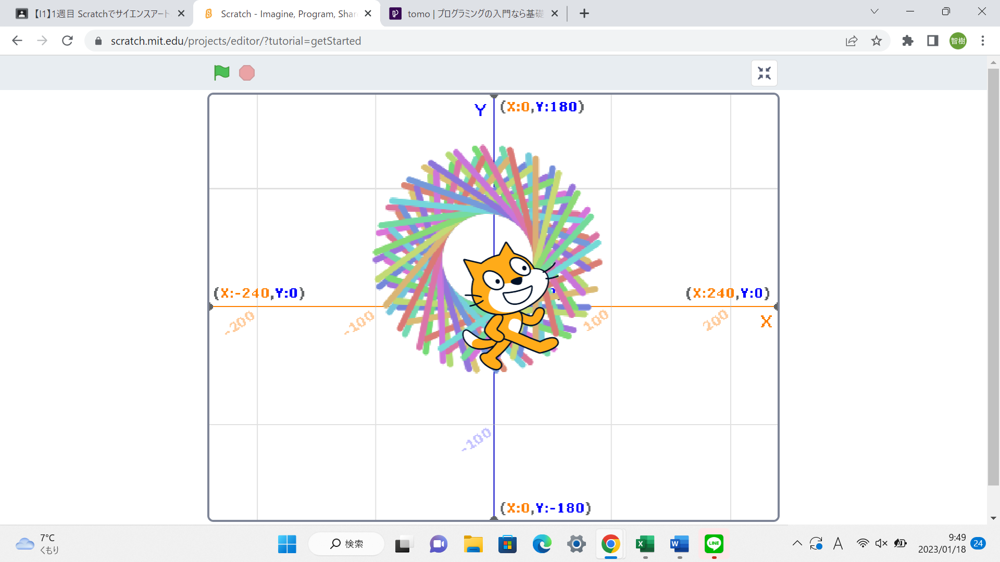
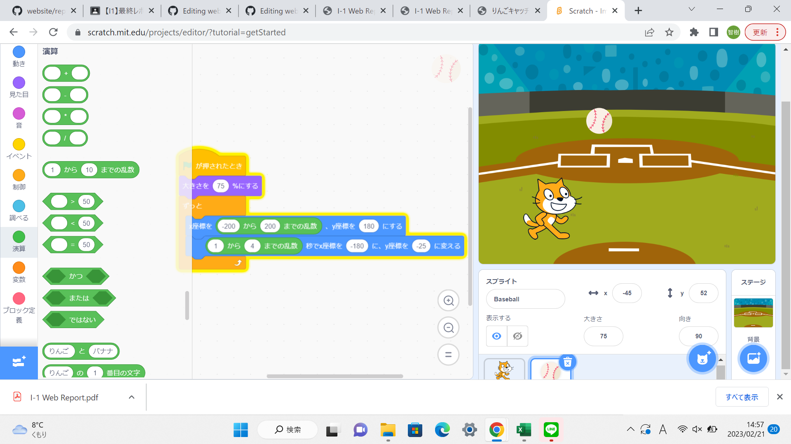

1週目のレポート ： 公大高専１年実習I-1
1B班31番 Kametto9
第1週目
1-1 サイエンスアート

1.内容
スクラッチを使って様々な連続的な線を書くプログラムを作成した。
2.感想
中学校で紐を使って今回と同じ様なアートを作った。しかしコンピューターを使うよりも遥かに時間がかかっていた。 プログラムを打ち込むだけで簡単にアートを作れるのが効率的だと思った。
1-2 ゲーム

1.画面上部から落ちてくるボールとキャラクターが当たった回数をカウントするプログラミングを作成した。
2.感想
乱数などを使うことでゲーム性が増強して面白さが生まれた。
1-3 ホームページ作成
私のホームページ
1.内容
githubを使って自分のホームページを作成した。
2.感想
こんなに簡単に世界中のひとが観覧することが出来るホームページを作れるのが驚きだった。